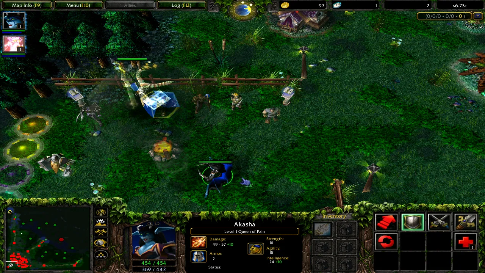
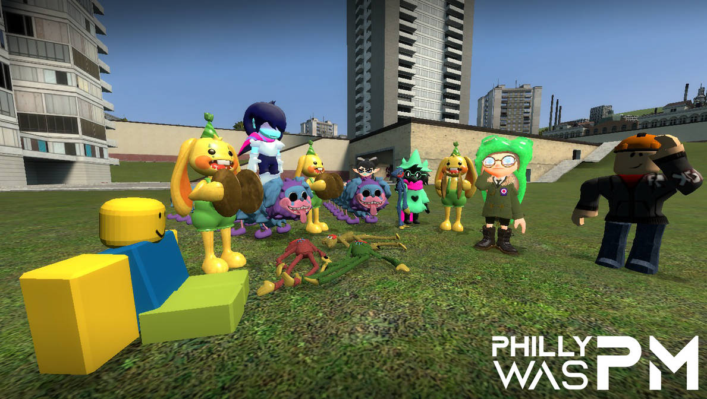
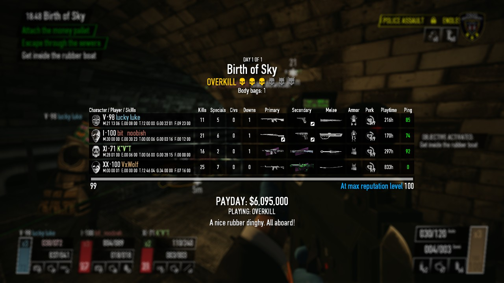

Galeria

Defense of the Ancients (Dota), mod de Warcraft III que inspirou o gênero MOBA

Garry's Mod (GMod), jogo famoso por sua infinidade de mods disponíveis no Steam Workshop

RLCraft, um modpack para o jogo Minecraft, com foco em sobrevivência e dificuldade

VoidUI, um mod de interface para o jogo Payday 2, que também exibe informações normalmente ocultas
Voltar